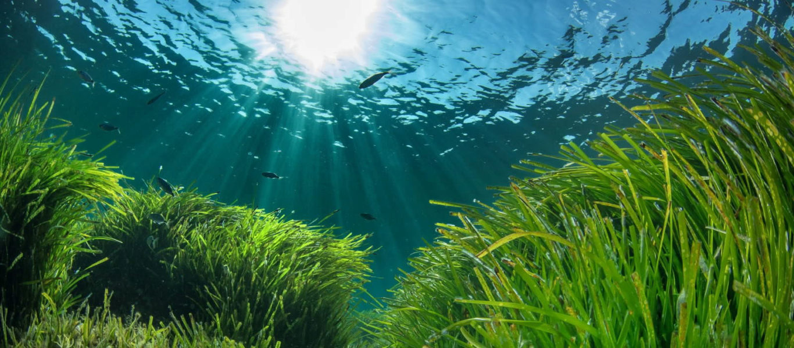

POMEMBNOSTI MORJA
Okolje in narava Vir kisika: Več kot polovica kisika na Zemlji izvira iz morskih alg in fitoplanktona. Podnebje: Morje uravnava temperature in absorbira toploto ter ogljikov dioksid.Življenjski prostor: Je dom številnim živalskim in rastlinskim vrstam.
Gospodarstvo in hrana Prehrana: Glavni vir hrane za več milijard ljudi.Viri energije: Pridobivanje soli, nafte, plina ter energije valovanja. Promet: Ključna pot za svetovno trgovino in transport blaga.
Človek in zdravje Dobro počutje: Pozitivno vpliva na dihala, zdravje in psihično sprostitev.Prosti čas: Središče turizma, rekreacije in športnih aktivnosti.
